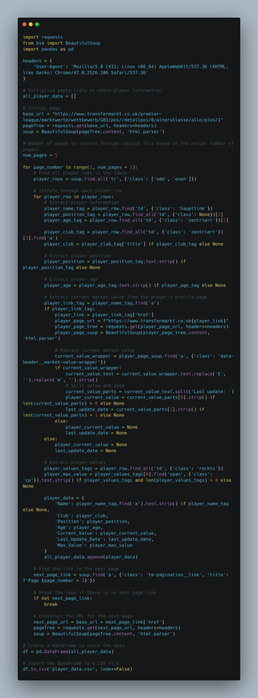
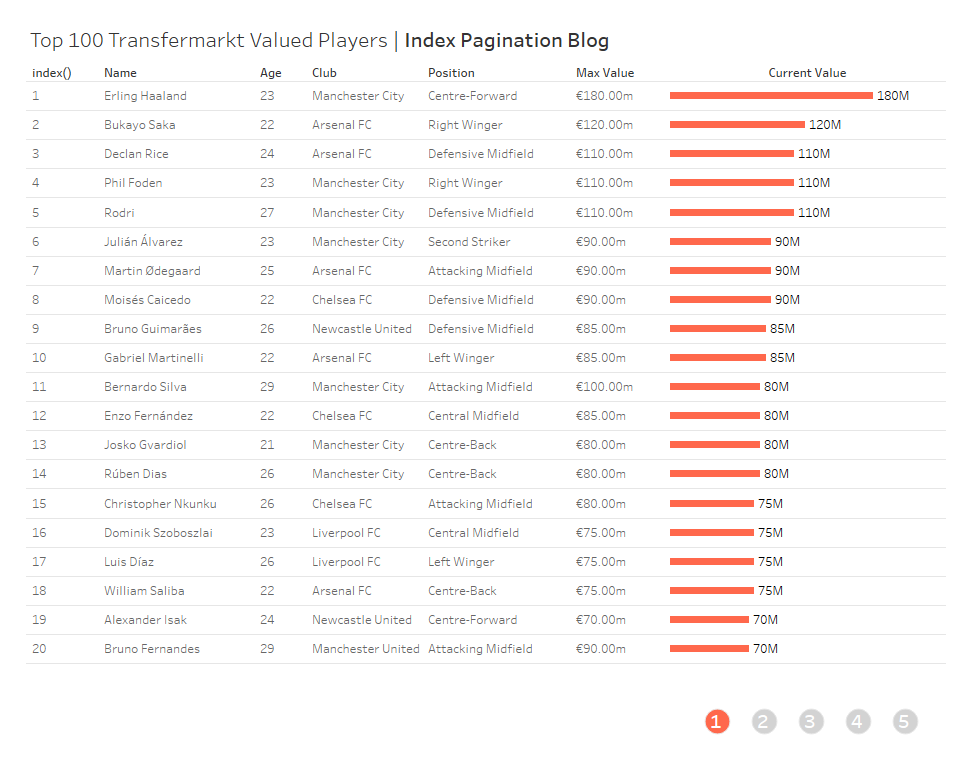
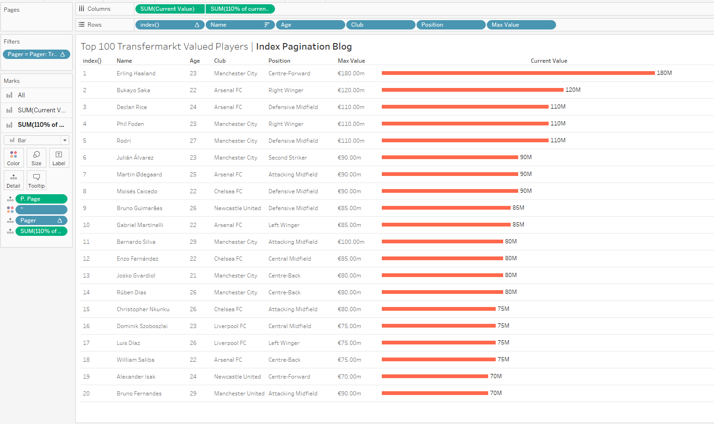
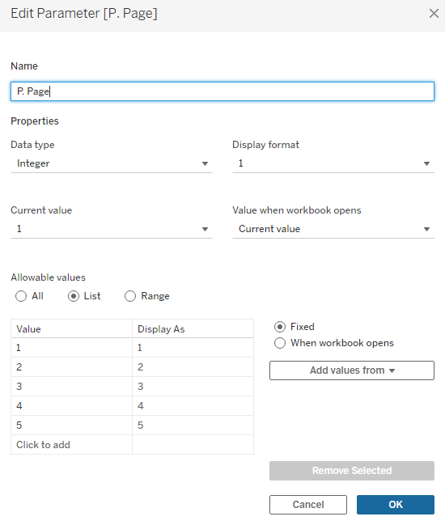
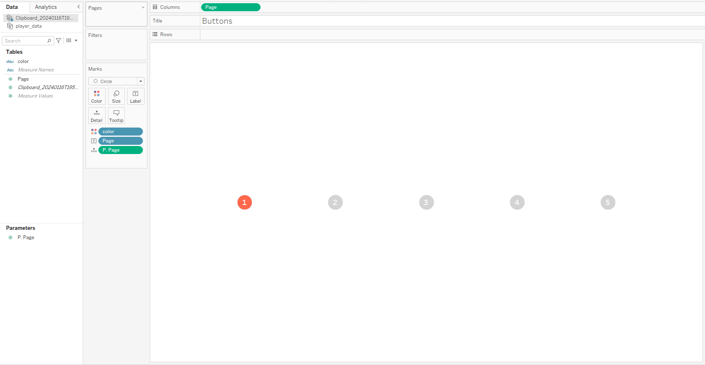
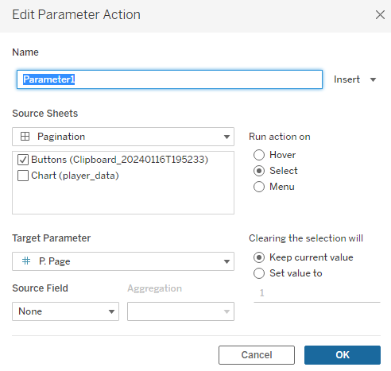

Intro To Transfermarkt Pt 2 (Tableau)
Hi All,
Previously I've written about beautiful soup, as well as Transfermarkt. I want to build a little bit on that code, and within this tutorial share how we can replicate the logic within Tableau.
If you missed the intro, you can find the code, here.
In todays blog we will look to expand on this code and add in some new details on finding what the most a player has been worth in their career, and who sits at the top of that list.
The new code looks at the Name, Club, Position, Age and Value of the player currently, as well as the maximum value of the player. We also bring back the date of the update for awareness.
You can find a copy of the new code and data output in the repository, here.
As a brief recap.

The provided Python code is a web scraping script designed to extract information about football players in the English Premier League from the Transfermarkt website. The script utilizes the requests library to send HTTP requests and retrieve the HTML content of the web pages, and the BeautifulSoup library for parsing and navigating the HTML structure. Additionally, it uses the pandas library to organize and export the scraped data into a CSV file.
The script iterates through multiple pages of player data, where each page represents a subset of players. For each player, it extracts relevant information such as the player's name, club, position, age, current market value, last update date, and maximum market value. The current market value is obtained by navigating to the player's individual profile page and extracting the value from a specific HTML element. The extracted data is then stored in a list of dictionaries (all_player_data). After scraping all the pages, the script creates a DataFrame using pandas and exports the data to a CSV file named 'player_data.csv'. The provided User-Agent header in the HTTP requests is used to mimic a web browser and avoid being blocked by anti-scraping mechanisms on the website.
So what has changed?
Well we have added in some new elements that wasn't seen in part 1, namely the age, club and position and CURRENT value.
The current value was a little more tricky than in the previous tutorial, namely because i end up going to the players page to take the value alongside the update date. If anyone was able to withdraw it from the main table then do let me know.
Tableau.
I thought it would be nice to be able to showcase how we can re create the simple table and add in some pagination style to the visual.

You can access the visual using the link at the top of the page.

The build is fairly generic in terms of being a bar chart. A bunch of things on rows (with them sorted on current value), followed by adding in an index value to know where they are ranked.
The buttons are where the slightly more difficult element comes into practice.
First we need the Pager calculation
if index() <= 20 then 1
elseif index() <= 40 then 2
elseif index() <= 60 then 3
elseif index() <= 80 then 4
elseif index() <= 100 then 5
END
This will help us separate our players.
Then we need a parameter that will help us with a click action to navigate through the pages.

A true false calculation is needed for the filters, to only show the relevant index values.
[Pager] = [P. Page]
Finally,
I bring in a new dataset of values 1 through 5 to act as the separate page buttons.

Then, all we need is an action on the dashboard and we are good to go.

Going Further:
- Why not try and find the market value of top players in a different league?
- Build the chart into a full dashboard on player metrics.
- Create a chart to show the difference between player market price, and max price the player has been valued at. Group pricing by club.
As always, Let me know how you get on with this one. I can be reached on Twitter, @_CJMayes.
LOGGING OFF,
CJ